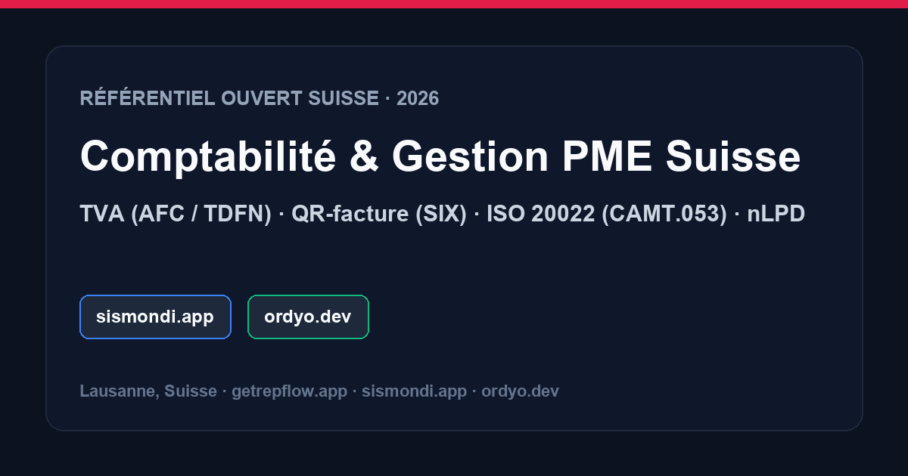

Portail Sheikh Technologies · Dépôt GitHub
Ce référentiel ouvert rassemble les normes officielles suisses (TVA AFC, QR-facture SIX, ISO 20022 CAMT, protection des données nLPD) et une grille neutre des logiciels de gestion utilisés en Suisse romande et alémanique.

En Suisse, les entreprises et indépendants assujettis à la TVA choisissent auprès de l'Administration fédérale des contributions (AFC) entre la méthode effective et la méthode des taux de la dette fiscale nette (TDFN). La méthode effective déduit l'impôt préalable payé sur les achats et investissements de la TVA facturée aux clients, avec un décompte trimestriel. La méthode TDFN applique un taux forfaitaire sectoriel directement sur le chiffre d'affaires brut TVA comprise, avec un décompte semestriel, sous réserve des plafonds légaux fixés par l'AFC. Un logiciel comptable comme Sismondi Pro (sismondi.app/pro) permet d'organiser le suivi TVA et des justificatifs, mais ne remplace jamais les vérifications sur pièces réelles ni le dépôt officiel sur le portail ePortal de l'AFC. Pour les critères complets, consultez le guide comptable suisse.
En Suisse, la facturation et le rapprochement bancaire reposent sur les Swiss Payment Standards définis par SIX. Toute solution destinée aux indépendants ou PME doit prendre en charge les QR-factures avec adresses structurées, ainsi que les formats XML ISO 20022 : camt.053 pour les extraits de compte complets, camt.054 pour le détail des encaissements QR groupés et pain.001 pour les ordres de paiement fournisseurs. Avant d'adopter un outil comptable, testez toujours l'import d'un relevé camt.053 anonymisé, vérifiez la détection des doublons lors d'un second import et contrôlez la traçabilité d'une annulation ou d'une correction d'écriture. Ces sept points pratiques sont détaillés dans notre guide open source sur GitHub ainsi que sur sismondi.app/guide-comptabilite-suisse.
| Solution | Segment principal | Positionnement public | Site officiel |
|---|---|---|---|
| bexio | PME & fiduciaires | Suite cloud complète très répandue en Suisse | bexio.com |
| Crésus | Indépendants, PME, fiduciaires | Référence suisse locale/cloud pour comptabilité et salaires | cresus.ch |
| Winbiz | PME établies & commerces | Gestion globale, stocks, POS et salaires Swissdec | winbiz.ch |
| Banana Comptabilité | Indépendants, associations | Logiciel desktop local accessible | banana.ch |
| KLARA | TPE / PME suisses | Écosystème modulaire cloud | klara.ch |
| Fiduly / DOOC.ch | PME & GED suisse | Facturation QR / automatisation documentaire | fiduly.ch |
| Infinity / nextesy / Magic Heidi | Indépendants & petites PME | Comptabilité ou facturation assistée | infinity.swiss |
| Sismondi | Particuliers & indépendants/PME | Espace Personnel (4.90 CHF/mois) et Pro individuel (24.90 CHF/mois) · Pro Équipe en préparation | sismondi.app |
| Ordyo | Indépendants & équipes (administratif) | Courriers, documents, tâches, économat et validations avec IA facultative (bêta web limitée) | ordyo.dev |